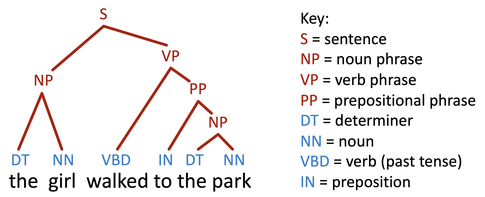

Examples of NLP over time


Studying the History of Ideas Using Topic Models
David Hall, Daniel Jurafsky, Christopher D. Manning
Examples of NLP over time: Parsing
Examples of NLP over time: Question Answering
Once there was a boy named Fritz who loved to draw. He drew everything. In the morning, he drew a picture of his cereal with milk. His papa said, "Don't draw your cereal. Eat it!" After school, Fritz drew a picture of his bicycle. His uncle said, "Don't draw your bicycle. Ride it!" ...
What did Fritz draw first?
A) the toothpaste
B) his mama
C) cereal and milk
D) his bicycle
Example from MCTest (Richardson et al., 2013)
Examples of NLP over time: Modern benchmarks
Survey Results: Python Experience

Survey Results: NLP Knowledge

Roadmap Comparison
Our Roadmap
- Introduction & Word embeddings
- Text Classification & Language modeling
- Overall recipe & Attention
- Transformers & Modern NLP pipeline
- Benchmark & evaluation & midterm
- Decoding LLMs & Prompting
- Post-training, Agents & reasoning
- Research in NLP
- Alignment & safety & presentations
Generated by ChatGPT
- Introduction to NLP
- Text Preprocessing & Tokenization
- Language Modeling (n-grams)
- Word Embeddings (Word2Vec, GloVe)
- Sequence Models (RNNs, LSTMs)
- Neural Networks & Deep Learning
- Attention & Transformer Models
- Pretrained Models (BERT, GPT)
- Information Extraction & NER
- Machine Translation & Seq2Seq
- Text Generation & Summarization
- Advanced Topics / Projects